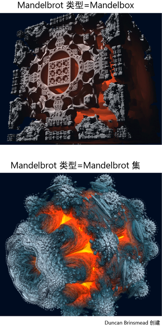

您可以使用内置的 Mandelbrot 纹理设置流体的纹理。Mandelbrot 集是复杂平面中数学点的一个集合，其边界会生成一个有趣的分形。使用此纹理类型，您可以通过 Mandelbrot 集及其不同的变量（例如 Julia 集、Mandelbox 集和其他混合解算）为流体不透明度设置纹理。
注： 使用该内置纹理可为不透明度而不是颜色设置纹理。
有关 Mandelbrot 纹理的详细信息，请参见 Mandelbrot。
通过 Mandelbrot 集为流体设置纹理的步骤（方法 1：使用预设）：
- 选择“流体 > 3D 容器”(Fluids > 3D Container)。
- 单击 fluidShape“属性编辑器”(Attribute Editor)右侧的“预设”(Presets)。
- 在预设中进行选择，如“Mandelbox”、“mandelboxJuliaChecker”和“mandelbulbSeaFoam”。
通过 Mandelbrot 集为流体设置纹理的步骤（方法 2）：
- 选择“流体 > 3D 容器”(Fluids > 3D Container)。
- 在 fluidShape 节点“属性编辑器”(Attribute Editor)的“内容方法”(Contents Method)中，将“密度”(Density)和“速度”(Velocity)设定为“禁用(零)”(Off(zero))。
- 在“着色 > 不透明度”(Shading > Opacity)下，将“不透明度输入”(Opacity Input)设定为“恒定”(Constant)。
- 在“纹理”(Textures)下，启用“纹理不透明度”(Texture Opacity)。选择“Mandelbrot”作为“纹理类型”(Texture Type)。
- 在“Mandelbrot 类型”(Mandelbrot Type)的五个求值类型中进行选择：“Mandelbrot 集”(Mandelbrot Set)、“Julia 集”(Julia Set)、“Mandelbox”、“带 Julia 集的长方体”(Box with Julia Set)、“带 Mandelbrot 集的长方体”(Box with Mandelbrot Set)。
- 在“着色”(Shading)下，将“透明度”(Transparency)降为零。
- 在“不透明度”(Opacity)下，调整输入偏移。
- 在“照明”(Lighting)下，启用“自身阴影”(Self Shadow)。
- 在“容器特性”(Container Properties)下，增加“基本分辨率”(Base Resolution)。
- 在“输出网格”(Output Mesh)下，降低“网格分辨率”(Mesh Resolution)（例如降为 0.5）以便更快地进行渲染。
- 在“表面”(Surface)下，选择“表面渲染”(Surface Render)以便将其渲染为曲面而不是多边形。
- 在“纹理”(Textures)下，增加“光锥”(Lobes)，例如增加到 7。
现在，这是一个 Mandelbulb。
- 在“纹理”(Textures)下，选择“内部着色”(Shaded Inside)作为“Mandelbrot 内部方法”(Mandelbrot Inside Method)以使曲面更加精细。
渲染流体的步骤
- 增加抗锯齿质量。单击“渲染设置”(Render Settings)按钮 ，然后选择“Maya 软件”(Maya Software)作为渲染器。在“Maya 软件”(Maya Software)选项卡中的“抗锯齿质量 > 质量”(Anti-aliasing Quality > Quality)下，选择“对比度敏感产品级”(Contrast sensitive production)。
注： 当前，仅 Maya 软件渲染器支持渲染 Mandelbrot 纹理。
-
若要向 Mandelbrot 添加颜色，您可以在“颜色”(Color)区域下调整设置。例如，可以将“中心渐变”(Center Gradient)设定为“颜色输入”(Color Input)，然后选择颜色渐变值。
- 单击 以通过 Maya 软件渲染器来渲染图像。
尝试使用不同的求值类型，并通过添加叶子、棋盘格、点和圆来自定义具有不同效果的纹理。
